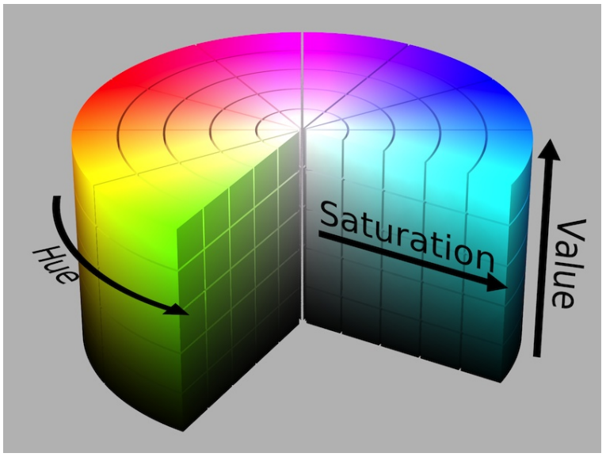

Utilizing the ZED camera the goals for the week was to determine colors, steer based on where the color is and, turn left or right at a distance from the blob based on the color. Monday was spent learning how to use the CV2 functions to determine colors from a picture. To determine a color the image must be turned into a more usable format called HSV. HSV is a different format for writing colors compared to RGB. Typical images are in the RGB format where each pixel has a Red, Green, and Blue value assigned to ranging from 0 to 255. Attempting to work with the RGB color space would require more processing power. The HSV color spaces works on a cylindrical format. Once the image is converted into the HSV format processing colors on the image becomes easier. A blob refers to the random shape of a desired color. For the end of week challenge the blob was either a red or green square. Finding the working blob requires creating a mask. The mask filters out all colors except the desired color, example in Figure 2.2.
The ability to mask on single images can easily be transferred to video, video is just pictures right after eachother in a fast motion that the human can not tell the individual images. To process video is real time requires a lot of processing power, thankfully the Jetson has a built in GPU to help with the processing.
Moving towards the technical challenge the tasks was to steer the robot based on where the blob was in the robot’s camera. To achieve the steering mechanism once a blob was found the center coordinate of the blob was found. The resolution of the image is 1280 pixels by 720 pixels. Only the X value of the center point was of concern. If the center point at the X value was less than 640 the RACECAR had to turn left. Complementary if the center point at the X value was greater than 640 the RACECAR had to turn right. Along with finding the color of a blob the area of a blob could be determined using the CV2 function called “cv2.contourArea(i)”. The area composes of all the pixels inside of the mask. For the challenge the area function was used to determine how far away from the blob the RACECAR was.
Combining the methods together the code controlled the RACECAR towards the blob until the blob took up most of the camera’s vision. Based on the color the code ran another python script that ran a PID controller from week 1 to run the car against the right or left wall. Those goals for the week were achieved, the car steered based on where a colored blob was within its image. Due to hardware issues the motor on the car did not engage properly causing the system to over steer when attempting to follow the wall. With more time the programs would have been able to react to the wall in a more efficient manner.
HSV is structured with the H value as the Hue, the S value as the Saturation (or intensity) of the hue, and the V value as the Value (or darkness) of the hue.